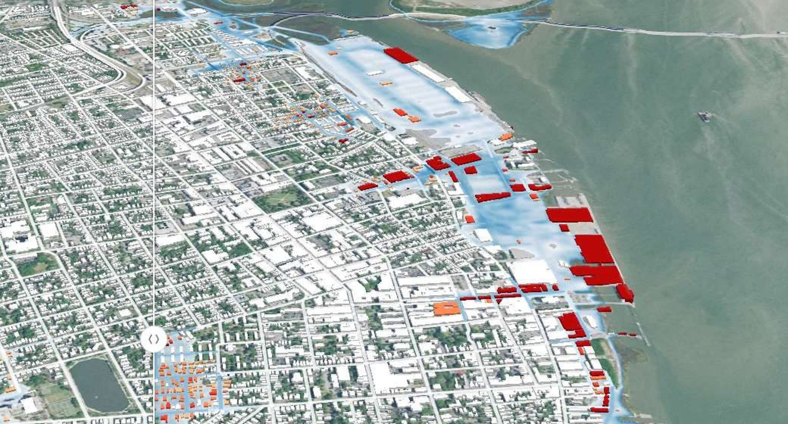

Explore flood scenarios
No modelling background needed. Users create their own scenarios, run them on state-of-the-art models and get visuals they can understand and share.
Unlike viewers preloaded with static maps, FloodAdapt lets you ask new questions and get the specific answers you need to build confidence in a decision and explain it.
